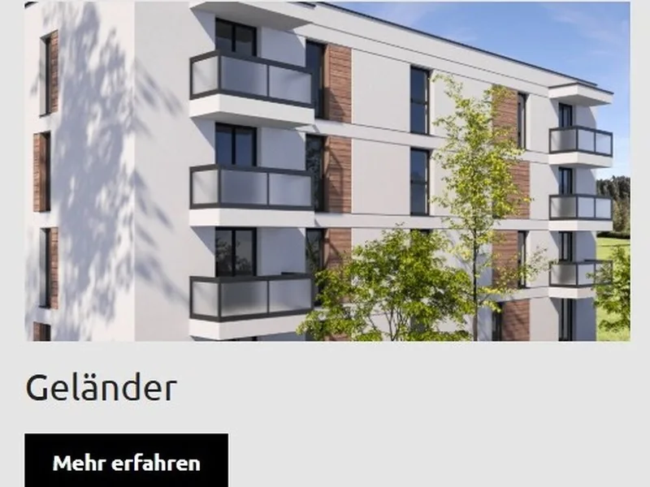

Unsere Modelle
Fahrradüberdachung – unsere Lösungen
Alle Produkte werden maßgefertigt und direkt bei Ihnen montiert.

Fahrradüberdachung Aluminium
Robuste Aluminiumkonstruktion, einfache Montage, beliebig erweiterbar. Für private Haushalte, Wohnanlagen, Betriebe oder öffentliche Einrichtungen. Glas- oder Polycarbonat-Eindeckung, in Standard- und Sonderfarben.
- Modularer Aufbau, beliebig erweiterbar
- Eindeckung: 8 mm VSG-Glas, 16 mm Polycarbonat oder Trapezblech
- Standard- und Sonderfarben (RAL)
- Für 2 bis 20+ Fahrräder skalierbar
- Geeignet für privat, Gewerbe & öffentliche Bereiche
- Witterungsbeständig, wartungsarm
Fahrradüberdachung aus Aluminium – modular, robust, regional montiert
Fahrräder sind wertvolles Eigentum – und das gilt erst recht für E-Bikes, die heute schnell 3.000 € und mehr kosten. Eine hochwertige Fahrradüberdachung aus Aluminium schützt Ihre Räder vor Regen, Schnee und UV-Strahlung und verlängert die Lebensdauer von Rahmen, Antrieb und Akku erheblich. BV AussenSysteme montiert modulare Fahrradüberdachungen für 2 bis 20 und mehr Stellplätze.
Das System basiert auf den bewährten TDS-Aluminiumprofilen von VD AluSysteme und ist in allen RAL-Farben erhältlich. Als Bedachung stehen Polycarbonat (leicht, lichtdurchlässig) und VSG-Sicherheitsglas (hochwertig, langlebig) zur Verfügung. Die Konstruktion ist modular: Sie können jederzeit weitere Stellplätze ergänzen, ohne das bestehende System zu demontieren.
Fahrradüberdachung für Schulen, Betriebe und Wohnanlagen im Westerwald
Besonders gefragt sind Fahrradüberdachungen bei Schulen in Montabaur, Altenkirchen und Neuwied, bei Gewerbebetrieben mit Mitarbeiterparkplätzen sowie bei Wohnanlagen, die ihren Mietern einen überdachten Stellplatz anbieten möchten. BV AussenSysteme plant und montiert Ihre Fahrradüberdachung schlüsselfertig – vom Aufmaß über das Angebot bis zur Übergabe.
Kontaktieren Sie uns für ein kostenloses Angebot – wir beraten Sie vor Ort im Westerwald und Umgebung.
Kostenlos beraten lassen
Wir kommen zu Ihnen – im Westerwald und Umgebung. Unverbindlich, vor Ort, auf Ihre Situation zugeschnitten.
Jetzt Termin anfragen